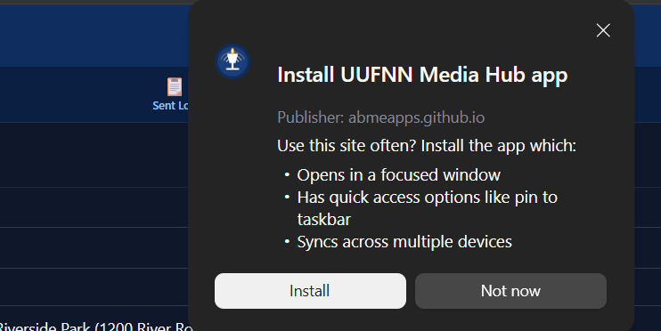
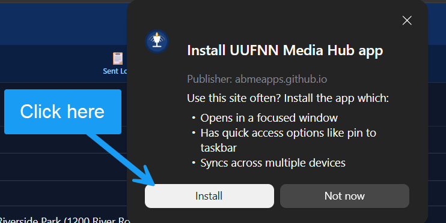

Getting the app
Contact Katie Baker or Alan Jordan to obtain the app.
What to expect on first launch
When you first open the app, it starts in Demo Mode — you'll see a sample announcement along with a set of fictional volunteer and media contacts. This lets you explore every feature without touching any real data.
Once you exit Demo Mode, add your real contacts (social media volunteers and traditional media contacts), compose an announcement, generate tailored versions for every channel with one tap, and distribute them directly from the app.
The Help tab explains each feature in detail.
How to install on your device
UUFNN Media Hub is a Progressive Web App (PWA) — it installs directly from your browser with no app store required. Once installed, it works offline; an internet connection is needed only when generating announcements.
iPhone or iPad
- With UUFNN Media Hub open in Safari, tap the Share button. On newer iPhones it is inside the ⋯ menu at the bottom-right. On older iPhones it is the square-with-arrow icon in the bottom toolbar.
- In the share sheet, scroll the list of options down and look for Add to Home Screen (a square with a plus sign). It is often near the bottom of the list.
- Tap Add to Home Screen. A preview appears showing the app icon and name.
- Tap Add in the top-right corner to confirm.
- Go to your home screen and find the UUFNN Media Hub icon — a deep blue tile with a chalice and broadcast arcs.
Android
- Open UUFNN Media Hub in Chrome.
- If Chrome shows an Install or Add to Home Screen prompt at the bottom of the screen, tap it.
- If no prompt appears: tap the three-dot menu (⋮) in the top-right corner, then tap Install app or Add to Home Screen.
- Tap Install to confirm.
- The UUFNN Media Hub icon appears on your home screen. If you don't see it immediately, swipe up to open the app drawer and look there.
Desktop — Windows or Mac (Edge or Chrome)
The install button appears as a small icon at the right end of the address bar. In Edge it looks like a grid of small squares. In Chrome it looks like a monitor with a downward arrow. The screenshots below show exactly where to look and what to expect in Edge.

- Open UUFNN Media Hub in Edge or Chrome.
- Look for the install icon at the far right of the address bar — a small grid of squares in Edge, or a monitor with a downward arrow in Chrome.
- Click it. An install dialog appears showing the app name, icon, and publisher.
- Click Install to confirm.

How to uninstall
iPhone or iPad
- Long-press the UUFNN Media Hub icon on your home screen.
- Tap Remove App, then tap Delete App.
- To also clear stored browser data: open Settings → scroll to Safari → Advanced → Website Data → find
abmeapps.github.ioand swipe left to delete.
Android
- Long-press the UUFNN Media Hub icon on your home screen.
- Tap Uninstall, or drag the icon to the trash.
- To also clear stored data: open Chrome → three-dot menu → Settings → Site Settings → All Sites → find
abmeapps.github.io→ Clear & Reset.
Desktop (Windows or Mac)
- Open the installed UUFNN Media Hub app.
- Click the three-dot menu in the app's title bar and select Uninstall UUFNN Media Hub.
- Check Also clear data if prompted, then confirm.
About your data
All data — contacts, announcements, the sent log, and your library — is stored locally on your device. Nothing is sent to any server except the announcement text when you tap Generate, which is sent to an AI service to produce the tailored channel versions. No contact information is ever included in those requests.
Use Settings → Export backup to download a copy of all your data as a JSON file, and Settings → Restore to move it to a new device.